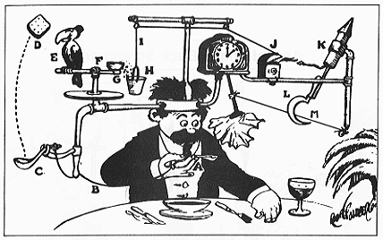

User-Defined Types
Each high-level language, from FORTRAN and COBOL in the 1950s, to Java and C++ today, comes equipped with a pre-defined, built-in set of data types. In C++, these are the primitive types like int, float and char. These types are defined in the language itself, and not as part of the standard library.
However, programmers want more. Financial programmers want real numbers, scientific programmers can't live without imaginary numbers, business programmers want dates and times, while graphics programmers really need points and shapes.

Rather than adding all of these extensions as built-in types, creating complex, "Rube-Goldberg-like languages", designers found it better to give programmers the ability to define their own data types. That's really at the heart of modern, object-based programming.
 This course content is offered under a
CC
Attribution Non-Commercial license. Content in this course
can be considered under this license unless otherwise noted.
This course content is offered under a
CC
Attribution Non-Commercial license. Content in this course
can be considered under this license unless otherwise noted.